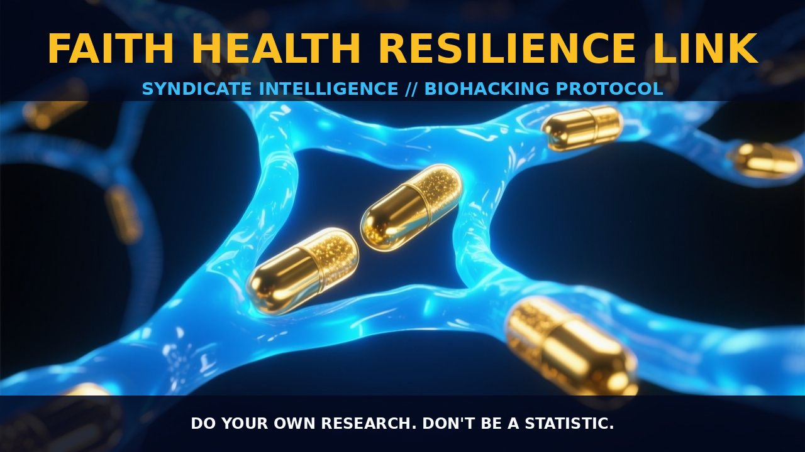

Neurobiological Foundations of Faith Resilience

1. The Mechanism
Faith resilience mechanisms are intricately linked to a complex interplay of neurobiological, psychological, and social factors. Engaging in religious practices, such as prayer and meditation, has been shown to enhance emotional resilience and improve stress management. These practices modulate the release of stress hormones like cortisol, thereby reducing the physiological impact of chronic stress.
Religious coping mechanisms, including positive reappraisal and spiritual practices, contribute to improved pain endurance and reduced negative emotional responses to adversity. This psychological flexibility arises from the activation of the prefrontal cortex and the limbic system, which are crucial for emotional regulation and cognitive reappraisal.
The neural pathways involved in faith resilience are multifaceted. Spiritual practices activate the parasympathetic nervous system, promoting relaxation and reducing the fight-or-flight response. This is achieved through the modulation of neurotransmitters such as serotonin and GABA, which play key roles in mood regulation and stress reduction.
Research highlights the involvement of the hypothalamus-pituitary-adrenal (HPA) axis in stress response modulation. Chronic stress activates the HPA axis, leading to elevated cortisol levels, which negatively impact various physiological systems. Spiritual practices help regulate this axis, thereby mitigating the detrimental effects of stress on health.
2. Biological Leverage
The biological leverage of faith resilience mechanisms is rooted in the modulation of stress pathways and the enhancement of neuroplasticity. Chronic stress can lead to inflammation, oxidative stress, and neurodegeneration, contributing to a decrease in overall health and longevity. Spiritual practices, such as mindfulness and meditation, have been shown to reduce inflammation by decreasing the expression of pro-inflammatory cytokines, such as interleukin-6 (IL-6) and tumor necrosis factor-alpha (TNF-α).
Neuroplasticity enhancement through faith resilience mechanisms supports cognitive function and emotional regulation. Spiritual practices have been associated with increased neurogenesis in the hippocampus, a region critical for memory and learning. This enhanced neuroplasticity fosters adaptability and flexibility in response to stressors.
Spiritual practices also promote the maintenance of synaptic integrity, which is essential for efficient neural communication and synaptic plasticity. This is achieved through the modulation of growth factors such as brain-derived neurotrophic factor (BDNF), which plays a crucial role in neuronal survival and synaptic plasticity.
3. Tactical Implementation
Implementing faith resilience mechanisms into a biohacking regimen requires a thoughtful approach to combining spiritual practices with other health optimization strategies. A common practice is the integration of mindfulness and meditation, which can be performed daily to enhance emotional resilience and stress management. Low-to-moderate amounts of meditation, such as 15 to 30 minutes per day, have been shown to be effective in reducing stress and promoting neuroplasticity.
Incorporating prayer and spiritual reflection can provide a sense of purpose and belonging, critical for mental health and resilience. Engaging in meditation and mindfulness in the morning can set a positive tone for the day, promoting mental clarity and emotional stability. This can be complemented by incorporating spiritual reflection or prayer during the day, providing a sense of grounding and purpose.
Combining these practices with other biohacking strategies, such as intermittent fasting and exercise, can further enhance the overall resilience and longevity benefits. It is also crucial to maintain a balanced approach to stress management. Chronic stress can be mitigated through the use of adaptogens, such as ashwagandha and rhodiola, which support the HPA axis and reduce cortisol levels.
Incorporating social support through community engagement, such as joining spiritual groups or participating in community-based interventions, can further enhance the resilience and longevity benefits of faith resilience mechanisms.
Prostar Life Hack
Integrate daily meditation and mindfulness practices to enhance emotional resilience and stress management. Start with 15-30 minutes a day and complement with regular spiritual reflection or prayer to foster a sense of purpose and belonging.
[ AUTHOR: LEAD TECHNICAL RESEARCHER ]